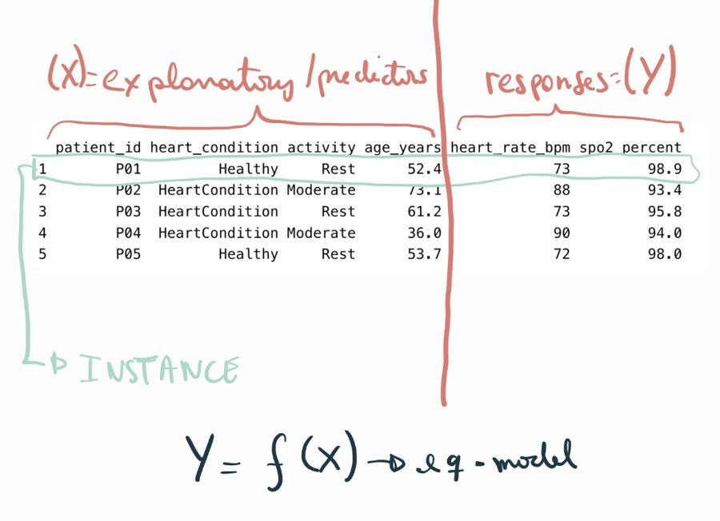

| name | site | age | sofa | lactate | map_min | baseline_creat | protocol_adherence | crp | albumin |
|---|---|---|---|---|---|---|---|---|---|
| Aoife Byrne | ICU_B | 71 | 6 | 2.1 | 66 | 1.0 | 0.72 | 95 | 2.7 |
| Tomás Ruiz | ICU_A | 54 | 3 | 1.2 | 78 | 0.9 | 0.85 | 45 | 3.4 |
| Priya Nair | ICU_D | 38 | 12 | 4.1 | 54 | 1.5 | 0.55 | 190 | 2.2 |
1 Dati, modelli e decisioni
Qui sotto trovi cinque cose che Emma e Seán hanno davanti a sé stasera. Classifica ciascuna come dati (un fatto registrato), modello (una rappresentazione di come le cose sono collegate tra loro), informazione (ciò che un modello ci dice su questo caso) oppure decisione (una scelta tra azioni possibili). Prova a indovinare: il capitolo spiega ognuno di questi termini.
| Elemento | La tua etichetta |
|---|---|
| "Il lattato di Aoife è 2,1 mmol/L." | |
| Le cartelle di 1.250 pazienti di terapia intensiva del passato, provenienti da quattro ospedali. | |
| "L'aumento della creatinina dipende dalla gravità della malattia, dalla pressione arteriosa e dalla funzione renale di base, più una certa variabilità non spiegata." | |
| "Si prevede che la creatinina di Aoife aumenti di circa 0,3 mg/dL nelle prossime 48 ore." | |
| Avviare stasera il bundle nefroprotettivo, oppure rivalutare al mattino. |
Come usare questo capitolo
Inizi da qui?
Questo è il primo capitolo, quindi non dà nulla per scontato. Se sei arrivato al libro per un argomento successivo, due parti di questo capitolo meritano comunque una lettura, perché tutti gli altri capitoli vi si appoggiano: i quattro esempi ricorrenti (Sezione 1.1) e la base decisionale con la sua soglia (Sezione 1.5). Ogni capitolo successivo le riassume brevemente nel proprio riquadro Inizi da qui?.
Questo capitolo costruisce il vocabolario dell’intero libro: dati, modelli, decisioni e che cosa intendiamo per intelligenza artificiale e apprendimento automatico (machine learning). Comprende dodici sezioni e un Laboratorio, otto verifiche rapide, tre widget “Prova tu”, una sfida e tre missioni di programmazione in R e Python. Calcola circa 90 minuti. Non serve ancora saper programmare: le missioni ti dicono esattamente che cosa scrivere.
La notazione in sintesi (solo per consultazione)
| Simbolo | Significato | Sezione |
|---|---|---|
| \(n\), \(p\) | numero di istanze (righe), numero di variabili (colonne) | Sezione 1.7 |
| \(\mathbf{x}_i\), \(y_i\) | variabili ed esito dell’istanza \(i\) | Sezione 1.7 |
| \(f\) | la relazione vera, ignota, tra variabili ed esito | Sezione 1.4 |
| \(\varepsilon\) | errore: la parte dell’esito che le variabili non spiegano | Sezione 1.4 |
| \(\hat f\), \(\hat y\) | un modello stimato e la sua previsione (“cappello” = stimato) | Sezione 1.4 |
| \(\mathcal{A}\) | l’insieme delle alternative di una decisione | Sezione 1.5 |
| \(\mathcal{K}\) | lo stato di conoscenza di chi decide | Sezione 1.5 |
| \(p_{\text{AKI}}\) | probabilità che un paziente sviluppi un danno renale acuto | Sezione 1.5 |
L’elenco completo si trova nella pagina della notazione.
1.1 Quattro esempi ricorrenti
In tutto il libro torneremo sulle stesse quattro situazioni. Provengono da ambiti diversi dell’assistenza sanitaria, così vedrai la stessa idea all’opera in contesti differenti, e crescono insieme al libro: la tabella che incontri oggi diventerà un problema di previsione, poi un rischio con la sua incertezza, poi un dataset con dati mancanti, una nuvola di punti in molte dimensioni, gruppi di pazienti, un modello spiegato, una domanda causale, un flusso di testo clinico e, infine, una decisione supportata da un modello linguistico. Tutti e quattro i dataset sono simulati (non descrivono nessuna persona reale) e si possono scaricare, insieme al codice che li ha generati, dall’appendice sui dati.
| Esempio 1 Terapia intensiva del Reparto 7 | Esempio 2 Studio ONCO-1 | Esempio 3 HomeBeat | Esempio 4 CellWorks | |
|---|---|---|---|---|
| Ambito | Medicina ospedaliera, farmacia | Oncologia, ATT | Dispositivi indossabili, studi clinici digitali | Produzione di terapie cellulari e geniche |
| Unità | 1.250 pazienti di terapia intensiva, 4 ospedali | 1.000 pazienti randomizzati (su 10.000) | 500 partecipanti seguiti a distanza | 420 lotti di produzione |
| Che cosa si misura | punteggio di gravità, lattato, pressione arteriosa, marcatori renali e di infiammazione | trattamento, dose, grado tumorale, 50 geni (su 2.000) | frequenza cardiaca, variabilità della frequenza cardiaca, temperatura cutanea, attività | giorni di coltura, deviazioni di temperatura e pH, vitalità, trasduzione |
| Esito | variazione della creatinina in 48 h | riduzione del tumore (%) | punteggio di stress, evento di peggioramento | punteggio di potenza |
| Domanda tipica | Chi è a rischio di danno renale acuto, e che cosa deve fare l’équipe stasera? | La chemioterapia funziona? Per chi? Quali geni contano? | Uno smartwatch può segnalare precocemente un peggioramento? | Quali fattori di processo determinano la potenza? Perché un lotto è stato scartato? |
| Volti che incontrerai | Aoife, Tomás e Priya; la dott.ssa Emma Walsh; Seán, il farmacista | i pazienti #0042 e #0917 | Lena, il cui orologio smette di inviare dati | il lotto CW-118, che non ha superato il test di rilascio |
Esempio 1 — Terapia intensiva del Reparto 7 è il nostro esempio principale. Il danno renale acuto (AKI, dall’inglese acute kidney injury) è una perdita improvvisa della funzione renale, frequente nei pazienti critici; un aumento della creatinina sierica di almeno 0,3 mg/dL entro 48 ore è uno dei criteri concordati a livello internazionale per diagnosticarlo (Kidney Disease: Improving Global Outcomes (KDIGO) Acute Kidney Injury Work Group 2012). Il dataset registra, per 1.250 pazienti del passato, ciò che si sapeva al momento del ricovero — età, punteggio SOFA di insufficienza d’organo (Vincent et al. 1996), lattato, pressione arteriosa minima, marcatori renali e di infiammazione, grado di applicazione del protocollo assistenziale — e che cosa è successo alla loro creatinina nelle 48 ore successive. Stasera in reparto ci sono tre nuovi pazienti, e nessuno sa ancora che cosa succederà loro:
Esempio 2 — ONCO-1 è uno studio randomizzato in cui pazienti con tumori solidi sono stati assegnati, per sorteggio, alla chemioterapia o a nessuna chemioterapia. Le dimensioni del tumore sono state misurate prima e dopo il trattamento, ed è stata registrata l’espressione di 2.000 geni. Esempio 3 — HomeBeat segue 500 persone che, a casa, indossano uno smartwatch nell’ambito di uno studio decentralizzato (condotto in gran parte fuori dalla struttura clinica). Esempio 4 — CellWorks registra 420 lotti di produzione di una terapia cellulare; ogni lotto deve superare un test di potenza prima di poter essere somministrato a un paziente.
Anche le immagini sono dati. Quando arriveremo alle reti neurali (Capitolo 7), ai quattro esempi si aggiungerà una quinta fonte: radiografie del torace pediatriche etichettate come normali o polmonite, tratte dalla raccolta pubblica PneumoniaMNIST (Yang et al. 2023; Kermany et al. 2018). Sono descritte nell’appendice sui dati.
In quale esempio ricorrente l’assegnazione dell’esposizione principale è stata decisa dagli sperimentatori anziché dalle circostanze?
1.2 Vivere nell’era dei dati
Definizione 1.1 (Dati) I dati sono rappresentazioni registrate di fatti, osservazioni o misure relative a oggetti, eventi o fenomeni: i numeri di un sensore, le voci di una cartella clinica, i pixel di un’immagine, le parole di una lettera di dimissione, la sequenza di basi di un filamento di DNA. Di per sé sono simboli; diventano informazione quando vengono interpretati in un contesto.
Viviamo in un’epoca di abbondanza di dati. Negli ultimi decenni il costo dell’elaborazione e dell’archiviazione è diminuito, mentre la capacità di raccogliere, trasmettere e analizzare informazioni è cresciuta di diversi ordini di grandezza (Hilbert e López 2011). Le scienze della vita ne sono un esempio lampante: genomica, trascrittomica, proteomica e metabolomica producono descrizioni dei sistemi biologici enormi e ad alta risoluzione (Stephens et al. 2015; Hasin, Seldin, e Lusis 2017). In sanità, fascicoli sanitari elettronici (EHR), esiti di laboratorio, imaging, sensori indossabili e profili omici offrono insieme una visione multidimensionale di ogni paziente (Jensen, Jensen, e Brunak 2012; Hripcsak e Albers 2013).
La sfida non è più soltanto raccogliere dati, ma integrare fonti eterogenee in evidenze coerenti e affidabili per la previsione, la terapia personalizzata e il supporto alle decisioni cliniche (Raghupathi e Raghupathi 2014; Karczewski e Snyder 2018), mantenendo al tempo stesso cure sicure, eque e trasparenti (Topol 2019). Nel Reparto 7, per esempio, la cartella di Aoife riunisce già un punteggio di gravità, una lettura dell’emogasanalizzatore, un monitor della pressione arteriosa e gli esami di laboratorio, ciascuno prodotto da un sistema diverso.
1.3 Da dove vengono i dati: osservazione ed esperimento
I metodi di intelligenza artificiale e di apprendimento automatico dipendono dalla qualità e dalla natura dei dati con cui vengono addestrati. La maggior parte dei dati sanitari nasce da uno di due tipi di processo.
Definizione 1.2 (Dati osservazionali e sperimentali) I dati osservazionali vengono registrati mentre le cose accadono, senza che lo sperimentatore intervenga: cartelle cliniche, registri, flussi da dispositivi indossabili, archivi di immagini, registri di produzione. I dati sperimentali si generano quando lo sperimentatore assegna trattamenti, condizioni o esposizioni secondo un disegno prestabilito: dagli esperimenti in vitro e dagli studi sugli animali fino agli studi clinici controllati randomizzati.
I dati osservazionali offrono ampiezza e realismo: mostrano come si comportano i trattamenti nella pratica quotidiana, sull’intera varietà dei pazienti e su lunghi periodi; per questo sono indispensabili per monitorare la sicurezza delle nuove terapie dopo l’approvazione (Sherman et al. 2016). I dati sperimentali offrono rigore: poiché lo sperimentatore controlla chi riceve che cosa (idealmente tramite randomizzazione), costituiscono la base più solida per affermare che un trattamento causa un effetto (Hernán e Robins 2020), e sono l’ossatura delle valutazioni regolatorie delle nuove terapie avanzate.
I due tipi sono complementari. Un modello di rischio può essere sviluppato su dati osservazionali e poi verificato in uno studio clinico; uno studio può suggerire quali pazienti traggono beneficio, e i dati osservazionali mostrano poi se ciò vale nella pratica. Nei nostri esempi, Reparto 7, HomeBeat e CellWorks sono osservazionali; ONCO-1 è sperimentale. Tieni a mente questa distinzione: in Sezione 1.10 vedremo che determina a quali domande un modello può rispondere.
Un farmacista ospedaliero estrae dalle cartelle tutti i pazienti che hanno ricevuto vancomicina lo scorso anno, con la loro funzione renale prima e dopo. Che tipo di dati sono?
1.4 Modelli: rappresentazioni della realtà
Osserva la Figura 1.1. A sinistra c’è un cilindro tagliato obliquamente. Visto da punti di vista diversi appare come un’ellisse (dal basso), un triangolo (di lato) o un arco arrotondato (di fronte). Ciascuna di queste figure piane rappresenta lo stesso oggetto solido, ne conserva alcune caratteristiche e ne perde altre, e si basa su delle ipotesi: per esempio, che un oggetto tridimensionale possa essere riassunto da un’ombra bidimensionale. Un altro termine per rappresentazione è modello.

Definizione 1.3 (Modello) Un modello è una rappresentazione semplificata di una parte della realtà, costruita per uno scopo e fondata su delle ipotesi. Più modelli possono rappresentare la stessa realtà; si possono confrontare in base a quanto bene servono allo scopo.
I modelli possono essere disegni, diagrammi di flusso o repliche fisiche. In questo libro sono per lo più matematici. Partiamo dal più piccolo dataset che si possa immaginare (Tabella 1.3): cinque persone per le quali abbiamo registrato se hanno una cardiopatia, il loro livello di attività e la loro età, insieme alla frequenza cardiaca e alla saturazione di ossigeno nel sangue (SpO2). Questa tabella è un’evidenza fattuale su un piccolo pezzo di realtà, l’equivalente del cilindro tagliato della Figura 1.1.
| Persona | Condizione | Attività | Età | FC (bpm) | SpO2 (%) |
|---|---|---|---|---|---|
| P01 | Healthy | Rest | 52.4 | 73 | 98.9 |
| P02 | HeartCondition | Moderate | 73.1 | 88 | 93.4 |
| P03 | HeartCondition | Rest | 61.2 | 73 | 95.8 |
| P04 | HeartCondition | Moderate | 36.0 | 90 | 94.0 |
| P05 | Healthy | Rest | 53.7 | 72 | 98.0 |
Da quest’unica realtà potremmo costruire molte rappresentazioni, a seconda del nostro obiettivo. Supponiamo di voler spiegare la frequenza cardiaca e la SpO2 usando il resto delle informazioni. Possiamo scrivere
\[ (\text{frequenza cardiaca},\ \text{SpO}_2) = f(\text{condizione},\ \text{attività},\ \text{età}) , \qquad(1.1)\]
che afferma che i due esiti sono una qualche funzione \(f\) di condizione, attività ed età. Così com’è, la Equazione 1.1 è una funzione matematica: presuppone che non ci sia errore. Ma due persone con la stessa condizione, la stessa attività e la stessa età raramente hanno esattamente la stessa frequenza cardiaca: la biologia, i fattori non misurati e gli errori di misura giocano tutti un ruolo. Aggiungere un termine di errore la trasforma in un modello statistico,
\[ (\text{frequenza cardiaca},\ \text{SpO}_2) = f(\text{condizione},\ \text{attività},\ \text{età}) + \text{errore} , \qquad(1.2)\]
che nella notazione generale del libro si scrive
\[ y = f(\mathbf{x}) + \varepsilon , \qquad(1.3)\]
dove \(y\) è l’esito, \(\mathbf{x}\) raccoglie le caratteristiche usate per spiegarlo, \(f\) è la parte sistematica e \(\varepsilon\) (epsilon) è la parte che le caratteristiche non spiegano (James et al. 2021, cap. 2). La vera \(f\) è ignota. Gran parte del resto di questo libro tratta dei diversi modi di definire la funzione che collega ciò che vogliamo spiegare a ciò che usiamo per spiegarlo, cioè di stimare \(f\) a partire dai dati. Una stima si indica con un cappello, \(\hat f\), e la sua previsione per una persona è \(\hat y = \hat f(\mathbf{x})\). Nel Reparto 7 la stessa idea si scrive \(\text{variazione della creatinina} = f(\text{SOFA}, \text{lattato}, \text{pressione arteriosa}, \dots) + \varepsilon\), e puoi costruire tu stesso una \(f\) di questo tipo.
Costruisci il tuo modello del Reparto 7. Ogni punto è uno dei 1.250 pazienti del passato: il suo punteggio SOFA al ricovero e la variazione della sua creatinina in 48 ore. Il tuo modello è una retta, \(\hat y = a + b \times \text{SOFA}\). Sposta i cursori per scegliere \(a\) e \(b\). L’errore assoluto medio (MAE, mean absolute error) è la distanza media, in mg/dL, tra la tua retta e i punti: più è piccolo, meglio è. Qui ogni retta viene valutata su tutti i 1.250 pazienti, gli stessi punti attraverso cui passa: non c’è ancora una suddivisione in addestramento e test (la Sezione 1.8 ne introduce una). Su questi pazienti il modello più semplice possibile — ignorare il SOFA e prevedere per tutti la variazione media — ha un MAE di circa 0,24. Obiettivo: porta il tuo MAE sotto 0,20.
Nota tre cose. Primo, molte rette diverse sono rappresentazioni plausibili degli stessi dati: i modelli sono confrontabili, e serve un criterio — qui il MAE — per confrontarli. Secondo, anche la retta migliore lascia la maggior parte dei punti fuori dalla linea: quella dispersione è \(\varepsilon\). Terzo, la tua retta si basa su un’ipotesi: che la relazione sia lineare e che il solo SOFA basti. I capitoli successivi allentano entrambe le ipotesi.
In \(y = f(\mathbf{x}) + \varepsilon\) per il Reparto 7, quale dei seguenti elementi non è compreso in \(\varepsilon\)?
Fai conoscenza con i dati del Reparto 7. Il dataset è già caricato per te come icu. Usa una sola funzione per scoprire quanti pazienti (righe) e quante variabili (colonne) contiene.
La funzione è l’abbreviazione di dimensions (dimensioni): tre lettere.
dim(icu)L’attributo descrive la forma (in inglese shape) della tabella.
icu.shape1.5 Decisioni
Osserva l’incrocio della Figura 1.2. Un viaggiatore che si ferma al cartello può svoltare a sinistra, svoltare a destra, proseguire dritto o tornare indietro. Si può percorrere una sola strada alla volta; ciascuna porta in un luogo diverso; e il viaggiatore può conoscere le conseguenze di ogni strada bene, poco o per niente.

White (1969) ha trasformato questa intuizione in una definizione. Una decisione è un processo chiaramente identificabile che risolve uno stato di ambiguità — diverse alternative, di cui se ne può scegliere una sola — all’interno di uno stato di conoscenza sulle loro conseguenze. Indicando con \(\mathcal{A}\) l’insieme delle alternative e con \(\mathcal{K}\) la conoscenza di chi decide,1 una decisione è il passaggio
1 White scrive \(Q\) e \(K\). Noi usiamo \(\mathcal{A}\) e \(\mathcal{K}\) perché \(Q\), \(K\) e \(k\) avranno altri significati più avanti nel libro (query e chiavi in un transformer, il numero di cluster, il numero di fold).
\[ (\mathcal{A}, \mathcal{K}) \longrightarrow a \in \mathcal{A}, \]
cioè da un insieme di alternative e da ciò che sappiamo su di esse a un’unica alternativa scelta \(a\).
Definizione 1.4 (Decisione) Una decisione è la scelta di un’alternativa \(a\) da un insieme di alternative mutuamente esclusive \(\mathcal{A}\), compiuta sulla base dello stato di conoscenza \(\mathcal{K}\) di chi decide riguardo alle loro conseguenze, di solito incerte.
Stasera, nel Reparto 7, \(\mathcal{A} = \{\text{avviare il bundle},\ \text{cure standard}\}\). La conoscenza \(\mathcal{K}\) comprende le misure di Aoife, l’esperienza clinica di Emma, le linee guida e, se riusciamo a costruirlo, la stima del rischio di Aoife fornita da un modello. L’assistenza sanitaria e le tecnologie terapeutiche avanzate sono piene di decisioni di questo tipo: scegliere una strategia terapeutica; disegnare uno studio clinico (chi è eleggibile, quale dose, quale endpoint); scegliere tra una terapia genica, una terapia cellulare e un farmaco; proseguire o interrompere una terapia al variare dei biomarcatori; assegnare i posti letto in terapia intensiva o gli organi; rilasciare o scartare un lotto prodotto; valutare se una nuova tecnologia vale il suo costo; stabilire se un sistema di supporto decisionale basato sull’intelligenza artificiale è abbastanza sicuro da essere utilizzato.
Le teorie della decisione si suddividono in tre grandi famiglie (Bell, Raiffa, e Tversky 1988), riassunte nella Tabella 1.4.
| Normativa | Descrittiva | Prescrittiva | |
|---|---|---|---|
| Domanda | Come dovrebbe decidere un agente idealmente razionale? | Come decidono effettivamente le persone? | Come possono le persone reali decidere meglio? |
| Fondamento | Assiomi di razionalità, utilità attesa | Osservazione; euristiche, distorsioni cognitive, razionalità limitata | Principi normativi adattati ai vincoli reali |
| Ambiti tipici | Economia, teoria delle decisioni | Psicologia cognitiva | Ingegneria, ricerca operativa, gestione del rischio, medicina |
Questo libro adotta la prospettiva prescrittiva, e in particolare quella dell’analisi delle decisioni: la disciplina che applica la teoria delle decisioni a problemi pratici, affinché chi decide nella realtà, con tempo e attenzione limitati, possa costruire decisioni solide (Howard 1966a, 1988). Talvolta viene chiamata ingegneria delle decisioni (Sarti 2013, 2015).
1.5.1 La base decisionale
L’analisi delle decisioni organizza un problema in una base decisionale: una formulazione esplicita delle alternative, delle loro conseguenze, delle preferenze di chi decide tra quelle conseguenze e delle incertezze che le collegano (Howard 1988; Sarti 2013). La base può essere scritta come una tabella, disegnata come un albero decisionale o un diagramma di influenza (Howard e Matheson 2005), e si costruisce in modo iterativo: esperti tecnici, un analista e i decisori si scambiano conoscenze, partendo da un problema oscuro, finché la base non è abbastanza chiara da permettere di agire (Figura 1.3).

Spetzler, Winter, e Meyer (2016) descrivono sei elementi della qualità decisionale: (1) un inquadramento appropriato, (2) alternative creative, (3) informazioni pertinenti e affidabili, (4) valori e compromessi chiari, (5) un ragionamento solido e (6) l’impegno ad agire. Una decisione è forte quanto il suo elemento più debole. È nell’elemento 3 che entrano in gioco i modelli: il loro compito è fornire informazioni pertinenti e affidabili sulle incertezze. È questa la motivazione pratica di tutto ciò che segue.
La catena della qualità decisionale (adattato da Spetzler, Winter, e Meyer 2016). Una decisione è forte quanto il suo anello più debole; l’anello 3, dove i modelli forniscono informazioni, è ombreggiato.
Guardando avanti: l’IA come attore dell’intera catena
Oggi una ragionevole divisione dei compiti è questa: l’IA può rafforzare l’anello 3 (informazione) e l’anello 5 (ragionamento, controllando calcoli e coerenza), può sostenere l’anello 2 (suggerendo alternative), mentre inquadrare il problema, soppesare i valori insieme al paziente e impegnarsi nell’azione restano compiti umani. In questo libro i modelli servono soprattutto l’anello 3. Ma l’IA sta cominciando ad andare oltre e ad agire come un meta-attore lungo l’intera catena della qualità decisionale. Un modello linguistico può aiutare a inquadrare un problema chiedendo quale decisione si stia davvero prendendo (anello 1), proporre alternative che il gruppo non aveva considerato (anello 2), aiutare pazienti e professionisti a esplicitare i loro valori e compromessi (anello 4), esaminare un ragionamento alla ricerca di lacune e distorsioni comuni (anello 5) e seguire se l’azione scelta viene attuata e monitorata (anello 6). Ognuno di questi ruoli porta con sé rischi propri: un inquadramento sbagliato presentato con sicurezza, alternative plausibili ma non praticabili, valori suggeriti dal sistema invece che raccolti dalle persone coinvolte. Nessuno di essi toglie alle persone la titolarità dei valori e la responsabilità della decisione. Il capitolo 18 riprende questo ruolo.
La base decisionale di Aoife. Supponi che l’unica incertezza rilevante stasera sia se Aoife svilupperà un danno renale acuto (AKI) nelle prossime 48 ore, con probabilità \(p_{\text{AKI}}\). L’équipe assegna a ciascuna delle quattro conseguenze possibili un punteggio da 0 (la peggiore) a 100 (la migliore), tenendo conto di tutto. Il valore atteso di un’alternativa è il suo punteggio medio, in cui ogni conseguenza è pesata per la sua probabilità. Sposta \(p_{\text{AKI}}\) e osserva quale alternativa risulta migliore; apri il pannello per modificare i punteggi.
Modifica i punteggi delle quattro conseguenze
Con i punteggi predefiniti la soglia è \(p = 0{,}25\) (Pauker e Kassirer 1980): se la probabilità di AKI di Aoife supera una su quattro, il bundle è la scelta più conveniente. Ne derivano due lezioni, che attraversano l’intero libro.
- Una decisione richiede sia probabilità sia valori. Il modello può stimare \(p_{\text{AKI}}\); non può dire all’équipe quanto sia grave la dialisi rispetto a un antibiotico sottodosato. I valori vengono dai pazienti, dai clinici e dalla società.
- L’informazione ha valore solo se può cambiare la decisione. Senza alcun modello, l’équipe potrebbe usare la media: il 58% dei pazienti del Reparto 7 del passato ha avuto un aumento della creatinina di almeno 0,3 mg/dL, un valore superiore alla soglia, quindi tutti riceverebbero il bundle. Il modello che costruiremo nel Capitolo 5 assegna a Tomás un rischio del 7%, ad Aoife del 49% e a Priya del 99%. Aoife e Priya restano sopra la soglia, ma Tomás scende sotto: il modello cambia la gestione di Tomás, ed è proprio in quel cambiamento che il modello dimostra la sua utilità. Gli analisti delle decisioni lo chiamano valore dell’informazione (Howard 1966a, 1966b). Lo renderemo preciso nei Capitoli 2 e 5.
L’équipe stabilisce che, per Aoife, un AKI con le cure standard sarebbe ancora peggiore di quanto pensato inizialmente (abbassa quel punteggio da 30 a 10). Che cosa succede alla soglia decisionale?
1.6 Che cosa intendiamo per intelligenza artificiale e apprendimento automatico?
1.6.1 Intelligenza umana e artificiale
Prima di definire l’intelligenza artificiale, vale la pena chiedersi che cosa sia l’intelligenza. Tre prospettive aiutano, e ciascuna ci dice qualcosa di diverso su ciò che le macchine possono e non possono fare.
- Filosofia. La parola deriva dal latino intelligere, “comprendere”, formato da inter (“tra”) e legere (“leggere” o “scegliere”): leggere tra le cose, scegliere tra di esse. In filosofia l’intelligenza è stata a lungo legata alla capacità di cogliere la verità, intesa come corrispondenza tra pensiero e realtà (David 2015). È qualcosa di più del pensare (possiamo pensare liberamente senza giudicare se qualcosa sia vero) e qualcosa di più dell’abilità (possiamo eseguire bene una procedura senza comprenderla).
- Biologia. Per un sistema vivente, l’intelligenza è vicina alla capacità di regolare se stesso e di adattarsi all’ambiente: mantenere in equilibrio il proprio stato interno (omeostasi) (Cannon 1929) e percepire ciò che accade intorno a sé e rispondervi. La gamma è enorme, da un batterio che nuota verso una fonte di cibo a un cervello umano che valuta una diagnosi.
- Informatica. Qui la parola è una metafora. Definiamo intelligente un sistema quando svolge compiti che, se eseguiti da una persona, richiederebbero uno sforzo cognitivo: riconoscere uno schema, fare una previsione, produrre una frase. Il sistema manipola simboli secondo regole e schemi appresi; non è richiesta alcuna comprensione, e nessuna viene rivendicata (Russell e Norvig 2021, cap. 1).
La terza prospettiva è la più importante per questo libro. Un computer può verificare se un’affermazione è coerente con le sue regole, o probabile alla luce dei suoi dati di addestramento; non può verificare se l’affermazione è vera nel mondo. Intelligenza artificiale descrive quindi ciò che un sistema fa, non ciò che comprende. Tienilo a mente ogni volta che un sistema sembra sicuro di sé: è all’origine delle “allucinazioni” dei modelli linguistici che studieremo nella Parte V (Ji et al. 2023).
Sei milionario?
Il tuo cervello è un computer straordinariamente economico ed efficiente. Le stime di quante operazioni al secondo esegua sono incerte di diversi ordini di grandezza, da circa 1013 a 1017, con una stima più plausibile intorno a 1015 (Carlsmith 2020); funziona con circa 20 watt. Una moderna GPU da data center (una NVIDIA H100) esegue circa 1015 operazioni a bassa precisione al secondo, assorbe circa 700 watt e costa nell’ordine di 30.000 dollari USA (NVIDIA Corporation 2023; Leswing 2024). Secondo la stima più plausibile, una sola GPU eguaglia la capacità aritmetica grezza del tuo cervello; secondo la stima più alta ne servirebbero circa cento, qualcosa come tre milioni di dollari di chip e circa 70 kilowatt, migliaia di volte la potenza usata dal tuo cervello. L’aritmetica grezza non è intelligenza, naturalmente, ma il confronto ricorda utilmente due cose: l’IA moderna è costosa in termini di energia e di hardware, e la “rete neurale” più capace in qualsiasi decisione clinica resta quella dentro una testa umana.
Un grande modello linguistico scrive un paragrafo fluente e sicuro che spiega un’interazione tra farmaci. Comprende ciò che ha scritto?
Definizione 1.5 (Intelligenza artificiale) L’intelligenza artificiale (IA) è il campo che costruisce sistemi capaci di svolgere compiti che, se eseguiti da esseri umani, richiederebbero processi cognitivi: percezione, ragionamento, apprendimento, linguaggio, presa di decisioni (Russell e Norvig 2021). La normativa europea definisce un sistema di IA come un sistema automatizzato che, per obiettivi espliciti o impliciti, deduce dall’input che riceve come generare output quali previsioni, contenuti, raccomandazioni o decisioni che possono influenzare ambienti fisici o virtuali (European Parliament and Council of the European Union 2024, articolo 3, punto 1).
L’IA è una famiglia di tecnologie che attinge a informatica, matematica, statistica, linguistica, psicologia cognitiva e filosofia. Tra gli esempi classici figurano i sistemi esperti che codificano le regole dei clinici, il riconoscimento vocale e delle immagini, i robot e i veicoli autonomi e l’elaborazione del linguaggio naturale, come la traduzione e il riassunto automatici.
Definizione 1.6 (Apprendimento automatico) L’apprendimento automatico (machine learning, ML) è la parte dell’IA in cui un sistema apprende dai dati invece di essere programmato con regole esplicite. Secondo Mitchell (1997), un programma apprende dall’esperienza \(E\) rispetto a un compito \(T\) e a una misura di prestazione \(P\) se la sua prestazione su \(T\), misurata da \(P\), migliora con \(E\). Il termine risale ai programmi per giocare a dama di Arthur Samuel (Samuel 1959).
Per il Reparto 7: il compito \(T\) è prevedere la variazione della creatinina; l’esperienza \(E\) sono le cartelle dei pazienti del passato; la prestazione \(P\) è, per esempio, l’errore assoluto medio che hai minimizzato nel widget qui sopra. Un sistema esperto codificherebbe invece le regole di un clinico (“se SOFA ≥ 10 e MAP < 60, segnala”); un sistema di apprendimento automatico apprenderebbe la propria regola dalle 1.250 cartelle.
La differenza si può riassumere in una riga. Nella programmazione tradizionale sono le persone a scrivere le regole, e il computer le applica ai dati per produrre risposte: regole + dati → risposte. Il punteggio CURB-65 per la polmonite è un buon esempio: i clinici hanno scelto cinque elementi (confusione, urea, frequenza respiratoria, pressione arteriosa, età pari o superiore a 65 anni) e il modo di sommarli (Lim et al. 2003). Nell’apprendimento automatico il computer riceve i dati e le risposte, e trova le regole: dati + risposte → regole. Un algoritmo studia migliaia di ricoveri per polmonite del passato con i relativi esiti e apprende un proprio punteggio. Il punteggio appreso può cogliere schemi che nessuno ha messo per iscritto, ma può anche memorizzare le particolarità dell’ospedale da cui ha imparato: il sovradattamento che incontreremo nella Sezione 1.9. Il punteggio scritto a mano è rudimentale ma trasparente e ampiamente validato; quello appreso deve guadagnarsi la stessa fiducia.
Come fa una macchina a “trovare le regole”? Ogni metodo di questo libro esegue una versione dello stesso ciclo di apprendimento: tentare una risposta con le impostazioni attuali del modello, valutare il tentativo misurando quanto è sbagliato, aggiustare le impostazioni nella direzione che lo rende meno sbagliato e ripetere finché non smette di migliorare. È esattamente ciò che hai fatto a mano con i cursori nella Sezione 1.4; i Capitoli 3, 4 e 7 mostrano come i computer lo facciano in modo automatico.
La Figura 1.4 colloca l’apprendimento automatico all’interno dell’intelligenza artificiale e mostra i due grandi usi discussi più avanti, l’IA predittiva e l’IA generativa. All’interno dell’apprendimento automatico, il deep learning (apprendimento profondo) (LeCun, Bengio, e Hinton 2015) usa reti neurali con molti strati, che imparano da sole le proprie variabili direttamente dai dati grezzi (pixel, segnali ECG, testo) invece di affidarsi a variabili scelte da persone; richiede grandi quantità di dati e di potenza di calcolo, ed è alla base della maggior parte dei titoli di oggi, dallo screening della retina (Gulshan et al. 2016) ai chatbot (Capitolo 7).
1.6.2 Quattro tipi di apprendimento
I metodi di apprendimento automatico vengono di solito raggruppati in base al tipo di compito che svolgono. La Figura 1.5 mostra le tre famiglie classiche; la modellazione generativa viene spesso aggiunta come quarta.
- L’apprendimento supervisionato usa dati etichettati — esempi di cui l’esito è noto — per apprendere una corrispondenza tra variabili ed esito. Reparto 7: prevedere la variazione della creatinina (un numero: regressione) o se si verificherà un AKI (una categoria: classificazione) a partire dai dati del ricovero (James et al. 2021). Capitoli 3–9.
- L’apprendimento non supervisionato usa dati non etichettati per trovare una struttura: gruppi, direzioni, sintesi a bassa dimensionalità. HomeBeat: raggruppare i partecipanti in profili di attività e di stress senza che nessuno dica quali siano questi profili (Hastie, Tibshirani, e Friedman 2009, cap. 14). Capitoli 10–11.
- L’apprendimento per rinforzo apprende una politica — una regola per agire — interagendo con un ambiente e ricevendo nel tempo ricompense o penalità. Reparto 7: imparare quando modificare la dose di un farmaco man mano che la creatinina cambia di giorno in giorno (Sutton e Barto 2018). Capitolo 14.
- La modellazione generativa apprende la distribuzione dei dati per poter creare esempi nuovi e realistici: cartelle cliniche sintetiche, immagini, molecole, testi (Goodfellow, Bengio, e Courville 2016, cap. 20). Capitoli 15–19.
Spesso la parte costosa sono le etichette. Immagina di etichettare un milione di radiografie del torace come normali o anomale: a un minuto per immagine sono circa 16.700 ore, qualcosa come otto anni di lavoro a tempo pieno di un radiologo. Due strategie riducono questo onere. L’apprendimento semi-supervisionato si addestra sui pochi esempi etichettati, lascia che il modello etichetti gli esempi non etichettati su cui è più sicuro e si riaddestra sull’insieme più ampio, con il rischio che il modello insegni a se stesso i propri errori (Chapelle, Schölkopf, e Zien 2006). L’apprendimento per trasferimento (transfer learning) parte da un modello già addestrato su un insieme di dati ampio e diverso (milioni di fotografie di tutti i giorni, per esempio) e lo perfeziona su qualche migliaio di immagini mediche, così come un medico che passa alla cardiologia non deve reimparare l’anatomia; il prezzo è che i dati originali portano con sé le proprie distorsioni (Pan e Yang 2010). Entrambe le idee ritornano nei Capitoli 7 e 18.
Quale tipo di apprendimento si adatta a ciascuna domanda?
- Prevedere la riduzione del tumore in ONCO-1 a partire da trattamento, grado ed espressione genica. Supervisionato
- Trovare gruppi di lotti CellWorks con profili di processo simili, senza usare la potenza. Non supervisionato
- Creare 10.000 partecipanti HomeBeat sintetici e realistici da condividere con un altro gruppo di ricerca senza esporre persone reali. Generativo
- Imparare, per tentativi ed errori in un simulatore, quando aumentare o ridurre giorno per giorno la dose di vancomicina. Per rinforzo
- Stimare se Priya svilupperà un AKI (sì/no) a partire dai suoi dati di ricovero. Supervisionato
- Redigere una bozza di lettera di dimissione per Tomás a partire dalle sue note della terapia intensiva. Generativo
1.6.3 IA predittiva e IA generativa
L’IA recente viene spesso descritta attraverso due paradigmi. L’IA predittiva stima esiti o probabilità a partire da dati esistenti: “Che cosa è probabile che accada?”, “A quale classe appartiene?” — rischio di riammissione, risposta del tumore, fallimento di un lotto. In questo libro IA predittiva e apprendimento automatico (supervisionato) sono usati quasi come sinonimi. L’IA generativa crea nuovi contenuti simili ai suoi dati di addestramento: grandi modelli linguistici che scrivono testi (Brown et al. 2020), reti generative avversarie (Goodfellow et al. 2014) e modelli di diffusione (Ho, Jain, e Abbeel 2020) che creano immagini, autoencoder variazionali (Kingma e Welling 2014) che sintetizzano cartelle cliniche o molecole.
I due paradigmi sono complementari, non rivali. I modelli generativi possono simulare scenari, proporre molecole candidate o redigere documenti; i modelli predittivi possono poi stimare l’effetto probabile o la qualità di ciò che è stato generato, e a decidere è una persona. Nelle tecnologie terapeutiche avanzate questa combinazione si usa già per progettare molecole (Zhavoronkov et al. 2019) e ottimizzare protocolli; il Capitolo 18 esamina un farmaco passato da un progetto di IA generativa a uno studio clinico.
Un ospedale installa un software che segnala qualsiasi paziente la cui creatinina aumenti di almeno 0,3 mg/dL, esattamente come indicato dalla linea guida KDIGO. Si tratta di apprendimento automatico?
1.7 L’anatomia di un dataset e di un metodo di apprendimento
Torniamo alle cinque persone della Tabella 1.3 e guardiamo la tabella come fa un modellista (Figura 1.7). Ogni riga è una persona, un’istanza. Le colonne che usiamo per spiegare (condizione, attività, età) sono le variabili esplicative o predittori, indicati con \(X\); le colonne che vogliamo spiegare (frequenza cardiaca e SpO2) sono le risposte, indicate con \(Y\); e il modello è l’equazione che le collega, \(Y = f(X)\).

Qui le risposte sono due. Se le modelliamo separatamente abbiamo due modelli a risposta singola; se le modelliamo insieme, un modello a risposta multipla. I dati del Reparto 7 hanno la stessa struttura su scala più ampia.
Ecco le prime righe dei dati del Reparto 7, esattamente come le vede il computer.
| patient_id | site | age | sofa | lactate | map_min | baseline_creat | protocol_adherence | bun | crp | albumin | delta_creatinine_48h |
|---|---|---|---|---|---|---|---|---|---|---|---|
| ICU_0001 | ICU_C | 78 | 3 | 3.04 | 76.5 | 1.07 | 0.611 | 26.3 | 83.9 | 3.48 | 0.140 |
| ICU_0002 | ICU_A | 50 | 7 | 0.79 | 69.4 | 1.38 | 0.887 | 41.0 | 36.3 | 2.69 | 0.242 |
| ICU_0003 | ICU_D | 70 | 3 | 1.71 | 75.2 | 0.98 | 0.518 | 25.4 | 58.5 | 2.48 | 0.298 |
| ICU_0004 | ICU_B | 58 | 7 | 1.27 | 67.5 | 0.62 | 0.514 | 36.5 | 56.6 | 2.70 | 0.094 |
| ICU_0005 | ICU_C | 81 | 11 | 2.46 | 62.1 | 1.04 | 0.745 | 39.8 | 30.0 | 1.69 | 0.335 |
| ICU_0006 | ICU_D | 67 | 3 | 1.59 | 82.6 | 0.85 | 0.904 | 22.6 | 60.3 | 2.42 | 0.239 |
Definizione 1.7 (Istanza, variabile, esito) Ogni riga di un dataset è un’istanza (qui, un paziente) e ogni colonna una variabile (feature). Le variabili usate per fare una previsione sono i predittori (input, variabili esplicative), indicati con \(\mathbf{x}_i = (x_{i1}, \dots, x_{ip})\) per l’istanza \(i\); la variabile che vogliamo prevedere è l’esito (risposta, target), indicato con \(y_i\). Quando l’esito di un’istanza è noto, prende il nome di etichetta. Un dataset ha \(n\) istanze e \(p\) predittori (James et al. 2021, cap. 2).
Nella Tabella 1.5, \(n = 1.250\); patient_id è un identificativo (mai un predittore: non porta alcuna informazione sul paziente, è solo un’etichetta per la riga); site e le nove misure cliniche sono i \(p = 10\) predittori; delta_creatinine_48h è l’esito. Quando si modella un solo esito si parla di modello a risposta singola, come nella maggior parte di questo libro.
Le variabili differiscono anche per tipo, e il tipo determina come un metodo può usarle:
| Tipo | Definizione | Esempio dal Reparto 7 |
|---|---|---|
| Categoriale (nominale) | Gruppi distinti senza ordine | site (ICU_A … ICU_D) |
| Ordinale | Livelli ordinati la cui distanza non è definita | uno stadio di AKI 1 < 2 < 3; nella pratica il SOFA viene spesso trattato come ordinale |
| Continua | Numeri su una scala con intervalli uguali e dotati di significato | lactate, map_min, delta_creatinine_48h |
Ogni metodo di questo libro viene descritto con la stessa anatomia (Figura 1.6): i dati e il contesto che li motiva; l’algoritmo — una sequenza precisa di passaggi che trasforma i dati in un modello stimato, e che dipende dal tipo di compito; e la prestazione, cioè una misura di quanto bene il modello svolge il suo compito.
Quanto è frequente il danno renale acuto nel Reparto 7? Usando il criterio KDIGO (un aumento di almeno 0,3 mg/dL), calcola la proporzione di pazienti del passato con AKI. Confrontare una colonna con un numero restituisce TRUE/FALSE per ogni paziente, e la media di valori TRUE/FALSE è la proporzione di TRUE.
La soglia è 0,3 mg/dL.
mean(icu$delta_creatinine_48h >= 0.3)La soglia è 0,3 mg/dL.
(icu["delta_creatinine_48h"] >= 0.3).mean()1.8 La pipeline predittiva: addestramento, test, impiego
La maggior parte dei progetti di apprendimento supervisionato segue la stessa pipeline (figura qui sotto).
- Addestramento. I dati del passato vengono suddivisi a caso in un insieme di addestramento (training set), usato per stimare il modello — cioè per scegliere i suoi parametri interni, come l’intercetta \(a\) e la pendenza \(b\) della tua retta — e in un insieme di test (test set), tenuto da parte. Per il Reparto 7 il libro esegue questa suddivisione una sola volta, a caso e con un seme fisso, e la conserva in
data/splits/ward7_split.csv: 1.000 pazienti di addestramento e 250 di test. Tutti i modelli del libro vengono stimati sugli stessi 1.000 e giudicati sugli stessi 250, così che modelli costruiti in capitoli diversi si possano confrontare in modo equo (il Capitolo 3 spiega come è stata creata la suddivisione). - Test. Il modello stimato prevede gli esiti dell’insieme di test, che non ha mai visto, e le previsioni vengono confrontate con gli esiti veri. In questo modo si stima come si comporterà il modello su pazienti nuovi. Valutare un modello sugli stessi dati su cui è stato addestrato dà un risultato eccessivamente ottimistico, come correggere l’esame di uno studente con le risposte che ha imparato a memoria (Hastie, Tibshirani, e Friedman 2009, cap. 7; Steyerberg 2019).
- Impiego. Se la prestazione è sufficiente per la decisione in questione, il modello viene usato per i nuovi casi — Aoife, Tomás e Priya, stasera — di cui nessuno conosce ancora l’esito. Un modello che funziona bene su dati nuovi si dice che generalizza.
La Figura 1.8 mostra le stesse tre fasi sulla tabella delle cinque persone: si stima il modello su tre persone, lo si verifica sulle altre due e poi si fanno previsioni per persone nuove, P06, P07, … P100, la cui frequenza cardiaca nessuno ha ancora misurato.

Un gruppo di lavoro stima un modello su tutti i 1.250 pazienti del Reparto 7 e riporta l’errore calcolato su quegli stessi 1.250 pazienti come l’errore da attendersi stasera. Qual è il problema?
1.9 Confrontare i modelli: distorsione, sovradattamento e validazione incrociata
Poiché più modelli possono rappresentare la stessa realtà, dobbiamo confrontarli. In questo libro il modello migliore è, per impostazione predefinita, quello che rappresenta meglio la realtà che intende approssimare per lo scopo in questione, e lo misuriamo con metriche di prestazione calcolate su dati che il modello non ha visto (James et al. 2021, cap. 2). Nell’apprendimento supervisionato le metriche misurano la distanza tra previsioni ed esiti osservati (errore assoluto medio, accuratezza, area sotto la curva ROC…); nell’apprendimento non supervisionato misurano quanto bene viene colta la struttura (silhouette, errore di ricostruzione); nell’apprendimento per rinforzo, la ricompensa cumulata; nella modellazione generativa, la fedeltà, la diversità e la sicurezza di ciò che viene generato. Ogni capitolo introduce le metriche di cui ha bisogno. La prestazione predittiva non è l’unico criterio: apprezziamo anche i modelli che si possono interpretare e usare per rispondere a domande scientifiche (Capitolo 12), e una buona analisi cerca un equilibrio.
Definizione 1.8 (Distorsione, varianza, sovradattamento) Un modello ha un’elevata distorsione (bias) quando le sue ipotesi sono troppo rigide per cogliere l’andamento reale: è sottoadattato (underfitting) e sbaglia in modo sistematico. Ha un’elevata varianza quando è così flessibile da seguire il rumore del suo particolare insieme di addestramento: è sovradattato (overfitting), con un’ottima prestazione sui dati di addestramento e una scarsa prestazione sui dati nuovi. I buoni modelli bilanciano le due cose (James et al. 2021, cap. 2).

Pensa a una poltrona fatta su misura per un bambino (Figura 1.9): si adatta a ogni curva di quel bambino, e di nessun altro. Un modello in sovradattamento è stato modellato sui pazienti specifici con cui è stato addestrato, comprese le loro particolarità casuali, e si adatta male ai pazienti nuovi.
Troppo semplice, giusto, troppo flessibile. Trenta punti di addestramento (i pallini) provengono da una curva regolare (tratteggiata) più del rumore. Il modello è un polinomio di cui scegli il grado: il grado 1 è una retta; i gradi elevati si piegano molte volte. Osserva l’errore di addestramento e l’errore su 300 nuovi punti di test.
L’errore di addestramento diminuisce sempre man mano che il modello diventa più flessibile; l’errore di test diminuisce e poi torna a salire. Il grado con l’errore di test più basso è quello da scegliere. Ma abbiamo usato l’insieme di test per fare questa scelta, quindi non è più un giudice imparziale del modello scelto. Il rimedio standard è la validazione incrociata (cross-validation).
Definizione 1.9 (Validazione incrociata) Nella validazione incrociata a \(V\) blocchi (\(V\)-fold cross-validation) i dati di addestramento vengono suddivisi in \(V\) parti (blocchi o fold). A turno, ciascun blocco viene tenuto da parte mentre il modello viene stimato sugli altri \(V-1\) blocchi e valutato su quello escluso; i \(V\) errori vengono poi mediati. Scelte come il grado del polinomio si fanno in base all’errore di validazione incrociata, e l’insieme di test si usa una sola volta, alla fine. Con \(V = n\) si parla di validazione incrociata leave-one-out (lasciane fuori uno) (Stone 1974; James et al. 2021, cap. 5).
Distorsione, sovradattamento e validazione incrociata affrontano tutti un’unica domanda: il modello sta apprendendo il segnale o sta memorizzando il rumore? Rispondere onestamente è ciò che rende un modello adatto a informare decisioni reali. Il Capitolo 3 trasforma queste idee in una procedura di lavoro.
La tua prima valutazione onesta. Usa la suddivisione fissa del libro dei dati del Reparto 7 in un insieme di addestramento (1.000 pazienti, 80%) e uno di test (250 pazienti, 20%), poi valuta il modello più semplice possibile: prevedere, per ogni paziente del test, la variazione media della creatinina dei pazienti di addestramento. Riempi lo spazio vuoto con la funzione che calcola una media. L’ultima riga calcola l’errore assoluto medio sull’insieme di test.
In R la funzione che calcola la media aritmetica è mean().
prediction <- mean(train$delta_creatinine_48h)Le colonne di pandas hanno un metodo .mean().
prediction = train["delta_creatinine_48h"].mean()R e Python leggono la stessa suddivisione, quindi entrambi danno 0,236 mg/dL. È la prima riga della tabella di confronto che il Capitolo 3 avvia e che ogni capitolo successivo amplia: ogni nuovo modello del Reparto 7 viene giudicato su questi stessi 250 pazienti di test.
1.10 Prevedere non è spiegare le cause: un primo sguardo
I modelli si possono raggruppare in base a come trattano il processo che ha generato i dati, il cosiddetto processo generatore dei dati.
- L’apprendimento automatico associativo (non causale) cerca schemi statistici stabili che prevedano un esito \(y\) a partire dalle variabili \(\mathbf{x}\), \(\hat y = \hat f(\mathbf{x})\), senza rappresentare perché lo schema esista. La regressione lineare, le foreste casuali e le reti neurali usate per la previsione appartengono a questa categoria. Modelli di questo tipo possono fallire quando il mondo cambia — per esempio dopo l’introduzione di una nuova politica terapeutica —, un problema noto come spostamento della distribuzione (distribution shift) (Finlayson et al. 2021).
- L’apprendimento automatico causale rappresenta il meccanismo che ha prodotto i dati e si chiede che cosa accadrebbe a \(y\) se intervenissimo su una variabile, mantenendo fisso tutto il resto. Richiede ipotesi sul meccanismo, di solito rappresentate con un grafo causale (Pearl 2009; Hernán e Robins 2020).
Il Reparto 7 offre un avvertimento concreto. Applicare più fedelmente il protocollo assistenziale protegge i reni? Poiché i dati sono simulati, conosciamo la verità: nel codice che li ha generati, ogni 10 punti percentuali in più di aderenza al protocollo riducono l’aumento della creatinina a 48 ore di 0,028 mg/dL (un coefficiente di −0,28 per unità di aderenza). Ma l’aderenza non è stata assegnata a caso: i pazienti più gravi — SOFA elevato — sono quelli più difficili da trattare secondo protocollo, e sono anche quelli in cui la creatinina tende comunque ad aumentare di più. La gravità è un confondente: influenza sia l’esposizione sia l’esito (figura qui sotto).
Esegui il codice qui sotto. Il primo modello considera solo l’aderenza; il secondo tiene conto anche della gravità.
Il modello ingenuo (naive) attribuisce all’aderenza un effetto protettivo quasi doppio rispetto a quello reale (circa −0,53 invece di −0,28), perché le accredita i reni più sani che derivano semplicemente dall’essere meno gravi. Tenere conto della gravità (adjusted) porta la stima vicino alla verità (circa −0,30). Entrambi i modelli prevedono in modo ragionevole; solo uno darebbe all’ospedale una risposta corretta alla domanda “quanto aiuterà migliorare l’aderenza?”. Non è ancora necessario che tu capisca il codice: il Capitolo 4 spiega questi modelli e il Capitolo 13 è dedicato alle domande causali.
Un modello addestrato sui dati del Reparto 7 prevede con accuratezza le variazioni della creatinina. Un dirigente propone di usarne i coefficienti per decidere quanto investire per aumentare l’aderenza al protocollo. Qual è il rischio principale?
1.11 Riproducibilità
I dati sono le nostre evidenze; i modelli trasformano le evidenze in informazione per le decisioni. In ogni fase — raccogliere e organizzare i dati, costruire un modello, valutarlo, comunicare i risultati — un principio conta più di tutti: la riproducibilità, cioè la possibilità per qualcun altro di ripetere la stessa analisi sugli stessi dati e ottenere gli stessi risultati (Peng 2011; Sandve et al. 2013). Si ottiene con un flusso di lavoro trasparente: codice che va dai dati grezzi ai numeri finali, semi casuali fissati, versioni del software registrate e controllo di versione (per esempio Git), che conserva la storia completa di ogni file (Blischak, Davenport, e Wilson 2016). Ogni volta che la governance dei dati, la proprietà intellettuale e la legge lo consentono, dati e codice dovrebbero essere condivisi.
In sanità la riproducibilità è anche una questione regolatoria. Le agenzie che approvano farmaci, dispositivi e terapie avanzate basano le loro decisioni su evidenze documentate, e il regolamento europeo sull’IA (AI Act) impone ai fornitori di sistemi di IA ad alto rischio, tra cui molti sistemi medici, di conservare documentazione tecnica e registri che consentano la tracciabilità dei loro sistemi (European Parliament and Council of the European Union 2024). Proprio per questo ogni dataset di questo libro è prodotto da uno script con un seme fissato. L’appendice sui dati li elenca, e l’Appendice A mostra come installare R, Python, Git e GitHub e mettere il tuo lavoro sotto controllo di versione.
1.12 Il posto di questo capitolo nel ciclo decisionale
Questo capitolo ha costruito la cornice di tutto ciò che segue. I dati (Sezione 1.2, Sezione 1.3) sono evidenze; un modello (Sezione 1.4) è una rappresentazione che trasforma le evidenze in informazione; una decisione (Sezione 1.5) combina quell’informazione con i valori, in condizioni di incertezza; e le sue conseguenze diventano nuovi dati. L’apprendimento automatico (Sezione 1.6) è un modo di costruire il passaggio del modello a partire dai dati. Che cosa può andare storto? Un modello valutato sui propri dati di addestramento sembra migliore di quanto sia (Sezione 1.8); un modello flessibile può memorizzare il rumore (Sezione 1.9); un modello predittivo può essere scambiato per un modello causale (Sezione 1.10). Chi mantiene il controllo? Le persone a cui appartengono i valori — pazienti e clinici — perché nessun modello può fornirli.
1.13 Laboratorio: un primo sguardo al Reparto 7
Il Laboratorio raccoglie in un unico posto il codice del capitolo e si chiude sull’esempio ricorrente. Eseguilo qui, oppure scaricalo ed eseguilo sul tuo computer: ch01_lab.it.R · ch01_lab.it.py.
Due osservazioni da portare con te. Primo, sui 250 pazienti di test la retta del SOFA batte il modello della media (MAE 0,191 contro 0,236 mg/dL): il SOFA contiene informazione sul rischio renale. Secondo, la retta prevede per Aoife un aumento di 0,30 mg/dL, proprio sulla soglia di AKI. Un singolo numero nasconde quanto sia incerta quella previsione; i Capitoli 2, 5 e 8 mostrano come trasformarlo in una probabilità utilizzabile dal widget decisionale.
1.14 Esercizi
- Dati o no? Per ciascuno tra CellWorks, HomeBeat e ONCO-1, indica un esempio di dati, un possibile modello, un’informazione che il modello potrebbe produrre e una decisione che potrebbe orientare.
- Osservazionale o sperimentale? Un ospedale confronta i tassi di AKI prima e dopo l’introduzione di un nuovo protocollo di gestione dei liquidi in tutti i reparti. Si tratta di uno studio osservazionale o sperimentale? Quali spiegazioni alternative di un calo dei casi di AKI ti vengono in mente?
- La tua soglia. Nel widget decisionale, imposta i quattro punteggi in modo che riflettano il tuo punto di vista sulla situazione di Aoife. Riporta la tua soglia e spiega in due frasi da che cosa dipende.
- Valore dell’informazione. Il modello che costruiremo nel Capitolo 5 assegna ai pazienti di stasera questi rischi di AKI: Tomás 7%, Aoife 49% e Priya 99%. Con i punteggi predefiniti, chi riceverebbe il bundle con e senza il modello, se “senza modello” significa usare il rischio medio del Reparto 7, pari al 58%? Per chi il modello cambia la decisione?
- Quale tipo di apprendimento? Scrivi una domanda di apprendimento supervisionato, una non supervisionato, una di apprendimento per rinforzo e una generativa per l’esempio CellWorks.
- Sovradattamento. Nel widget del polinomio, a quale grado l’errore di test è minimo? Perché l’errore di addestramento continua a diminuire oltre quel punto?
- Codice. Modifica il Laboratorio in modo che il modello lineare usi
map_minal posto disofa. Batte il modello della media? Batte la retta del SOFA? - Causalità. Nell’esempio sul confondimento, quali altre variabili dei dati del Reparto 7 potrebbero agire da confondenti dell’effetto dell’aderenza al protocollo? (Suggerimento: guarda come sono stati generati i dati in sim_ward7_icu_aki.R.)
Soluzioni scelte
2. Osservazionale: nessuno ha assegnato il protocollo a caso, e il confronto è di tipo prima-dopo. Un calo potrebbe essere dovuto ad altri cambiamenti avvenuti nel tempo (nuovo personale, una diversa casistica, infezioni stagionali, un monitoraggio più attento della creatinina che cambia il modo in cui l’AKI viene registrato).
4. Senza un modello tutti vengono trattati come se avessero un rischio del 58%, superiore alla soglia di 0,25, quindi tutti e tre ricevono il bundle. Con il modello, Aoife (0,49) e Priya (0,99) lo ricevono comunque, ma Tomás (0,07) no: il modello cambia la gestione di Tomás, risparmiandogli i costi del bundle. Quel cambiamento è il valore del modello.
6. Con il seme usato nel widget, l’errore di test è minimo al grado 4 (0,382), con il grado 3 praticamente alla pari (0,383). L’errore di addestramento continua a diminuire perché un polinomio più flessibile può sempre passare più vicino ai 30 punti di addestramento — compreso il loro rumore — anche quando questo peggiora la prestazione sui punti nuovi.
8. Nella simulazione l’aderenza dipende solo dal SOFA, quindi il confondente è il SOFA. Le variabili che dipendono dal SOFA (map_min, bun, crp, albumin) sono associate all’aderenza attraverso il SOFA; aggiustare per esse qui non è sbagliato, ma non elimina alcun confondimento aggiuntivo.
1.15 Sintesi
- I dati sono evidenze registrate sul mondo; provengono dall’osservazione o dall’esperimento, e la differenza è importante per le domande causali.
- Un modello è una rappresentazione semplificata della realtà, costruita per uno scopo; un modello statistico scrive \(y = f(\mathbf{x}) + \varepsilon\), e apprendere significa stimare \(f\).
- Una decisione sceglie un’alternativa in \(\mathcal{A}\) data la conoscenza \(\mathcal{K}\); l’analisi delle decisioni rende esplicite alternative, conseguenze, preferenze e incertezze. I modelli forniscono informazione sulle incertezze; i valori vengono dalle persone.
- L’IA costruisce sistemi che svolgono compiti che richiedono capacità cognitive; l’apprendimento automatico è l’IA che apprende dai dati. L’apprendimento può essere supervisionato, non supervisionato, per rinforzo o generativo.
- Una valutazione onesta richiede dati mai visti: un insieme di test, e la validazione incrociata per le scelte fatte durante l’addestramento. I modelli troppo semplici hanno un’elevata distorsione; quelli troppo flessibili vanno incontro a sovradattamento.
- Un modello che prevede bene non rivela necessariamente le cause: attenzione ai confondenti.
Dove verrà ripreso questo capitolo
| Idea di questo capitolo | Dove ritorna |
|---|---|
| Probabilità di AKI e soglia decisionale | Capitolo 2 (probabilità, Bayes, perdita attesa); Capitolo 5 (soglie e calibrazione) |
| Suddivisione addestramento/test, validazione incrociata, il riferimento della “media” | Capitolo 3 (il flusso di lavoro dell’apprendimento), poi ogni capitolo della Parte II |
| \(y = f(\mathbf{x}) + \varepsilon\) e la retta del SOFA | Capitolo 4 (modelli lineari) |
| Confondimento dovuto alla gravità | Capitolo 13 (dalla previsione alla causalità) |
| Apprendimento per rinforzo per il dosaggio | Capitolo 14 |
| Le macchine verificano la coerenza, non la verità | Capitoli 16–18 (modelli linguistici e allucinazioni) |
Prossimo capitolo: la variazione prevista di 0,3 mg/dL per Aoife è un singolo numero, ma Emma ha bisogno di sapere quanto sia probabile un AKI. Il Capitolo 2 ci dà il linguaggio per farlo: la probabilità.
Bibliografia
Bell, David E., Howard Raiffa, e Amos Tversky, a c. di. 1988. Decision Making: Descriptive, Normative, and Prescriptive Interactions. Cambridge: Cambridge University Press. https://www.cambridge.org/core/books/decision-making/D29E12748C31B85FE83C9CEDEE9D4D88.
Blischak, John D., Emily R. Davenport, e Greg Wilson. 2016. «A Quick Introduction to Version Control with Git and GitHub». PLoS Computational Biology 12 (1): e1004668. https://doi.org/10.1371/journal.pcbi.1004668.
Brown, Tom B., Benjamin Mann, Nick Ryder, et al. 2020. «Language Models Are Few-Shot Learners». In Advances in Neural Information Processing Systems 33, 1877–1901.
Cannon, Walter B. 1929. «Organization for Physiological Homeostasis». Physiological Reviews 9 (3): 399–431. https://doi.org/10.1152/physrev.1929.9.3.399.
Carlsmith, Joseph. 2020. «How Much Computational Power Does It Take to Match the Human Brain?» Open Philanthropy. https://www.openphilanthropy.org/research/how-much-computational-power-does-it-take-to-match-the-human-brain/.
Chapelle, Olivier, Bernhard Schölkopf, e Alexander Zien, a c. di. 2006. Semi-Supervised Learning. Cambridge, MA: MIT Press. https://doi.org/10.7551/mitpress/9780262033589.001.0001.
David, Marian. 2015. «The Correspondence Theory of Truth». The Stanford Encyclopedia of Philosophy. https://plato.stanford.edu/entries/truth-correspondence/.
European Parliament and Council of the European Union. 2024. «Regulation (EU) 2024/1689 of the European Parliament and of the Council of 13 June 2024 Laying Down Harmonised Rules on Artificial Intelligence and Amending Regulations (EC) No 300/2008, (EU) No 167/2013, (EU) No 168/2013, (EU) 2018/858, (EU) 2018/1139 and (EU) 2019/2144 and Directives 2014/90/EU, (EU) 2016/797 and (EU) 2020/1828 (Artificial Intelligence Act)». Official Journal of the European Union, L series, 2024/1689, 12 July 2024. https://eur-lex.europa.eu/eli/reg/2024/1689/oj.
Finlayson, Samuel G., Adarsh Subbaswamy, Karandeep Singh, John Bowers, Annabel Kupke, Jonathan Zittrain, Isaac S. Kohane, e Suchi Saria. 2021. «The Clinician and Dataset Shift in Artificial Intelligence». New England Journal of Medicine 385 (3): 283–86. https://doi.org/10.1056/NEJMc2104626.
Goodfellow, Ian, Yoshua Bengio, e Aaron Courville. 2016. Deep Learning. Cambridge, MA: MIT Press. https://www.deeplearningbook.org.
Goodfellow, Ian, Jean Pouget-Abadie, Mehdi Mirza, Bing Xu, David Warde-Farley, Sherjil Ozair, Aaron Courville, e Yoshua Bengio. 2014. «Generative Adversarial Nets». In Advances in Neural Information Processing Systems 27, 2672–80.
Gulshan, Varun, Lily Peng, Marc Coram, et al. 2016. «Development and Validation of a Deep Learning Algorithm for Detection of Diabetic Retinopathy in Retinal Fundus Photographs». JAMA 316 (22): 2402–10. https://doi.org/10.1001/jama.2016.17216.
Hasin, Yehudit, Marcus Seldin, e Aldons Lusis. 2017. «Multi-omics Approaches to Disease». Genome Biology 18 (1): 83. https://doi.org/10.1186/s13059-017-1215-1.
Hastie, Trevor, Robert Tibshirani, e Jerome Friedman. 2009. The Elements of Statistical Learning: Data Mining, Inference, and Prediction. 2ª ed. New York: Springer. https://doi.org/10.1007/978-0-387-84858-7.
Hernán, Miguel A., e James M. Robins. 2020. Causal Inference: What If. Boca Raton: Chapman & Hall/CRC.
Hilbert, Martin, e Priscila López. 2011. «The World’s Technological Capacity to Store, Communicate, and Compute Information». Science 332 (6025): 60–65. https://doi.org/10.1126/science.1200970.
Ho, Jonathan, Ajay Jain, e Pieter Abbeel. 2020. «Denoising Diffusion Probabilistic Models». In Advances in Neural Information Processing Systems 33, 6840–51.
Howard, Ronald A. 1966a. «Decision Analysis: Applied Decision Theory». In Proceedings of the Fourth International Conference on Operational Research, a cura di David B. Hertz e Jacques Melese. New York: Wiley-Interscience.
———. 1966b. «Information Value Theory». IEEE Transactions on Systems Science and Cybernetics 2 (1): 22–26. https://doi.org/10.1109/TSSC.1966.300074.
———. 1988. «Decision Analysis: Practice and Promise». Management Science 34 (6): 679–95. https://doi.org/10.1287/mnsc.34.6.679.
Howard, Ronald A., e James E. Matheson. 2005. «Influence Diagrams». Decision Analysis 2 (3): 127–43. https://doi.org/10.1287/deca.1050.0020.
Hripcsak, George, e David J. Albers. 2013. «Next-Generation Phenotyping of Electronic Health Records». Journal of the American Medical Informatics Association 20 (1): 117–21. https://doi.org/10.1136/amiajnl-2012-001145.
James, Gareth, Daniela Witten, Trevor Hastie, e Robert Tibshirani. 2021. An Introduction to Statistical Learning: With Applications in R. 2ª ed. New York: Springer. https://doi.org/10.1007/978-1-0716-1418-1.
Jensen, Peter B., Lars J. Jensen, e Søren Brunak. 2012. «Mining Electronic Health Records: Towards Better Research Applications and Clinical Care». Nature Reviews Genetics 13 (6): 395–405. https://doi.org/10.1038/nrg3208.
Ji, Ziwei, Nayeon Lee, Rita Frieske, et al. 2023. «Survey of Hallucination in Natural Language Generation». ACM Computing Surveys 55 (12): 1–38. https://doi.org/10.1145/3571730.
Karczewski, Konrad J., e Michael P. Snyder. 2018. «Integrative Omics for Health and Disease». Nature Reviews Genetics 19 (5): 299–310. https://doi.org/10.1038/nrg.2018.4.
Kermany, Daniel S., Michael Goldbaum, Wenjia Cai, et al. 2018. «Identifying Medical Diagnoses and Treatable Diseases by Image-Based Deep Learning». Cell 172 (5): 1122–1131.e9. https://doi.org/10.1016/j.cell.2018.02.010.
Kidney Disease: Improving Global Outcomes (KDIGO) Acute Kidney Injury Work Group. 2012. «KDIGO Clinical Practice Guideline for Acute Kidney Injury». Kidney International Supplements 2 (1): 1–138.
Kingma, Diederik P., e Max Welling. 2014. «Auto-Encoding Variational Bayes». https://arxiv.org/abs/1312.6114.
LeCun, Yann, Yoshua Bengio, e Geoffrey Hinton. 2015. «Deep Learning». Nature 521 (7553): 436–44. https://doi.org/10.1038/nature14539.
Leswing, Kif. 2024. «Nvidia’s Latest AI Chip Will Cost More than $30,000, CEO Says». CNBC. https://nbcsandiego.com/news/business/money-report/nvidias-latest-ai-chip-will-cost-more-than-30000-ceo-says/3465447.
Lim, W. S., M. M. van der Eerden, R. Laing, W. G. Boersma, N. Karalus, G. I. Town, S. A. Lewis, e J. T. Macfarlane. 2003. «Defining Community Acquired Pneumonia Severity on Presentation to Hospital: An International Derivation and Validation Study». Thorax 58 (5): 377–82. https://doi.org/10.1136/thorax.58.5.377.
Mitchell, Tom M. 1997. Machine Learning. McGraw-Hill.
NVIDIA Corporation. 2023. «NVIDIA H100 Tensor Core GPU: Product Specifications». https://www.nvidia.com/en-us/data-center/h100/.
Pan, Sinno Jialin, e Qiang Yang. 2010. «A Survey on Transfer Learning». IEEE Transactions on Knowledge and Data Engineering 22 (10): 1345–59. https://doi.org/10.1109/TKDE.2009.191.
Pauker, Stephen G., e Jerome P. Kassirer. 1980. «The Threshold Approach to Clinical Decision Making». New England Journal of Medicine 302 (20): 1109–17. https://doi.org/10.1056/NEJM198005153022003.
Pearl, Judea. 2009. Causality: Models, Reasoning, and Inference. 2ª ed. Cambridge: Cambridge University Press. https://doi.org/10.1017/CBO9780511803161.
Peng, Roger D. 2011. «Reproducible Research in Computational Science». Science 334 (6060): 1226–27. https://doi.org/10.1126/science.1213847.
Raghupathi, Wullianallur, e Viju Raghupathi. 2014. «Big Data Analytics in Healthcare: Promise and Potential». Health Information Science and Systems 2: 3. https://doi.org/10.1186/2047-2501-2-3.
Russell, Stuart, e Peter Norvig. 2021. Artificial Intelligence: A Modern Approach. 4ª ed. Hoboken, NJ: Pearson.
Samuel, Arthur L. 1959. «Some Studies in Machine Learning Using the Game of Checkers». IBM Journal of Research and Development 3 (3): 210–29. https://doi.org/10.1147/rd.33.0210.
Sandve, Geir Kjetil, Anton Nekrutenko, James Taylor, e Eivind Hovig. 2013. «Ten Simple Rules for Reproducible Computational Research». PLoS Computational Biology 9 (10): e1003285. https://doi.org/10.1371/journal.pcbi.1003285.
Sarti, Danilo Augusto. 2013. «Gerenciamento de incertezas por análise de decisões: aplicações à otimização da produção e demandas incertas». Universidade de São Paulo.
———. 2015. «Software Selection through Decision Analysis and Information Systems Management». Journal of Information Systems and Technology Management (JISTEM) 12 (1): 65–80. https://doi.org/10.4301/S1807-17752015000100004.
Sherman, Rachel E., Steven A. Anderson, Gerald J. Dal Pan, Gerry W. Gray, Thomas Gross, Nina L. Hunter, Lisa LaVange, et al. 2016. «Real-World Evidence – What Is It and What Can It Tell Us?» New England Journal of Medicine 375 (23): 2293–97. https://doi.org/10.1056/NEJMsb1609216.
Spetzler, Carl, Hannah Winter, e Jennifer Meyer. 2016. Decision Quality: Value Creation from Better Business Decisions. Hoboken, NJ: John Wiley & Sons.
Stephens, Zachary D., Skylar Y. Lee, Faraz Faghri, Roy H. Campbell, Chengxiang Zhai, Miles J. Efron, Ravishankar Iyer, Michael C. Schatz, Saurabh Sinha, e Gene E. Robinson. 2015. «Big Data: Astronomical or Genomical?» PLOS Biology 13 (7): e1002195. https://doi.org/10.1371/journal.pbio.1002195.
Steyerberg, Ewout W. 2019. Clinical Prediction Models: A Practical Approach to Development, Validation, and Updating. 2ª ed. Cham: Springer. https://doi.org/10.1007/978-3-030-16399-0.
Stone, M. 1974. «Cross-Validatory Choice and Assessment of Statistical Predictions». Journal of the Royal Statistical Society: Series B (Methodological) 36 (2): 111–47. https://doi.org/10.1111/j.2517-6161.1974.tb00994.x.
Sutton, Richard S., e Andrew G. Barto. 2018. Reinforcement Learning: An Introduction. 2ª ed. Cambridge, MA: MIT Press.
Topol, Eric J. 2019. Deep Medicine: How Artificial Intelligence Can Make Healthcare Human Again. New York: Basic Books.
Vincent, Jean-Louis, Rui Moreno, Jukka Takala, Sheila Willatts, Arnaldo De Mendonça, Hajo Bruining, C. K. Reinhart, Peter M. Suter, e L. G. Thijs. 1996. «The SOFA (Sepsis-related Organ Failure Assessment) Score to Describe Organ Dysfunction/Failure». Intensive Care Medicine 22 (7): 707–10. https://doi.org/10.1007/BF01709751.
White, Douglas J. 1969. Decision Theory. London: George Allen & Unwin.
Yang, Jiancheng, Rui Shi, Donglai Wei, Zequan Liu, Lin Zhao, Bilian Ke, Hanspeter Pfister, e Bingbing Ni. 2023. «MedMNIST v2 – A Large-Scale Lightweight Benchmark for 2D and 3D Biomedical Image Classification». Scientific Data 10: 41. https://doi.org/10.1038/s41597-022-01721-8.
Zhavoronkov, Alex, Yan A. Ivanenkov, Alex Aliper, et al. 2019. «Deep Learning Enables Rapid Identification of Potent DDR1 Kinase Inhibitors». Nature Biotechnology 37: 1038–40. https://doi.org/10.1038/s41587-019-0224-x.